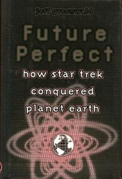

|
Future Perfect: How Star Trek Conquered Planet Earth
|
|  |
 |
| AUT |
Jeff Greenwald |
| PAG |
274 |
| EDI |
Viking, 1998 |
| ISBN |
0-670-87399-3 |
| Edizione Italiana |
Pianeta Star Trek |
| PAG |
269 |
| EDI |
Ultimo Avamposto, 2000 |
| ISBN |
88-88027-03-3 |
Questo è un libro Trek come nessun altro: uno sguardo profondo e spesso
divertente alla macchina che crea il mito esistente dietro la serie TV più
longeva del pianeta. L'autore di best- seller sui viaggi, Jeff Greenwald, si
mette alla scoperta di come Star Trek (presentato nel 1966 come una Carovana
verso le Stelle) sia diventato un mito globale. I suoi viaggi lo hanno
portato dai bazar dell'India alle terme giapponesi, da un matrimonio klingon in
Germania a un banchetto veneziano di Trekker, dove - ospite dell'Ammiraglio
dello
Star Trek Italian Club - è rimasto affascinato dagli appassionati italiani. Lungo la strada
è riuscito a incastrare Leonard Nimoy, a intrufolarsi da Kurt Vonnegut e a
visitare il Jet Propulsion Laboratory della
NASA,
dove la nuova generazione di
geni dell'astronautica sta realizzando sogni d'ispirazione Trek. È persino
riuscito a incontrare il Dalai Lama, il quale ha condiviso le sue sorprendenti
idee sui viaggi spaziali, gli alieni e Internet.